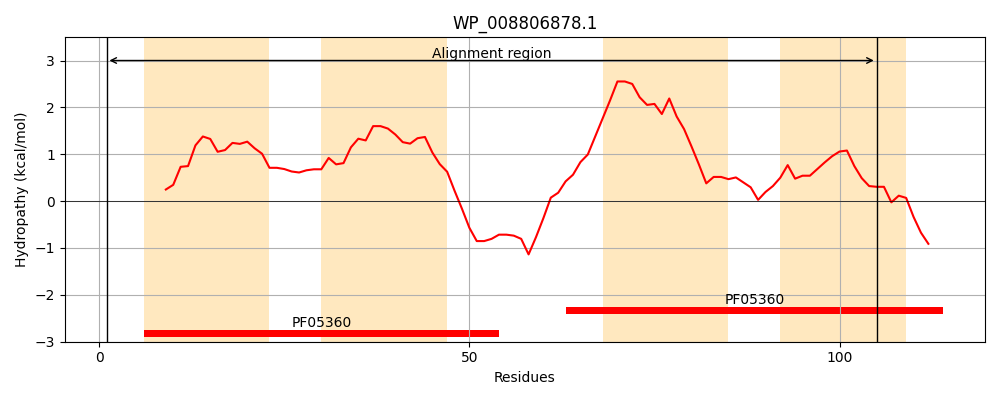
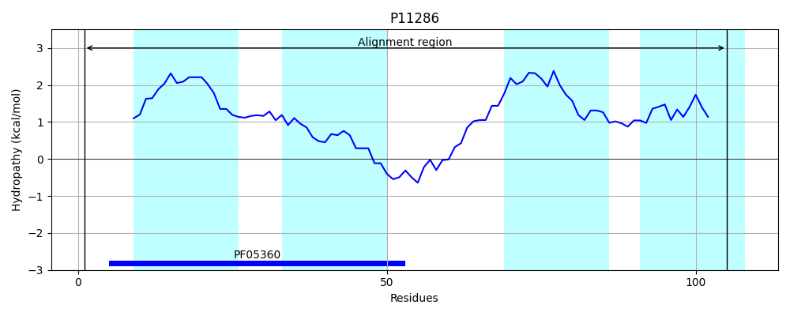
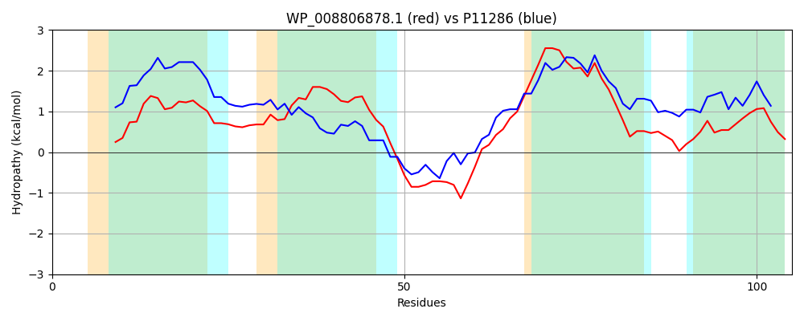

Hit Accession: P11286
Hit TCID: 9.B.44.1.1
Hit Description: gnl|BL_ORD_ID|9031 gnl|TC-DB|P11286|9.B.44.1.1 Hypothetical protein yiaB - Escherichia coli.
Mach Len: 105
e:0.000000
Query TMS Count : 4
Hit TMS Count: 4
TMS-Overlap Score: 3.200000
Predicted Substrates:None
BLAST Alignment:
| Protein Hydropathy Plots: | |
|---|---|
|  |  |
Pairwise Alignment-Hydropathy Plot: | |
|  | |